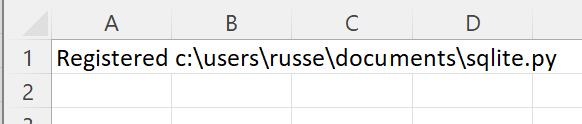
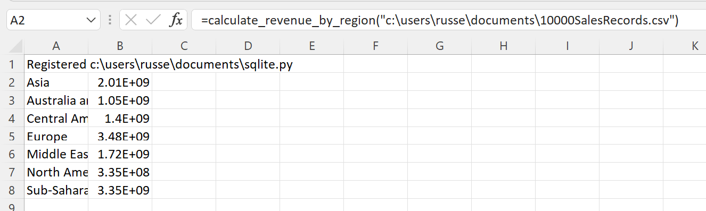

Using SQLite to analyse data¶
The Python standard library includes sqlite3, a wrapper for the SQLite database.
SQLite can be very useful if you want to manipulate data before displaying the results in Excel.
We will use this Python code to read a csv file of sales data (the same file as in the Read CSV data from a file example) into an in-memory SQLite database. The sales data is then grouped by region.
# Read a csv file into SQLite and analyse
import os
import csv
import sqlite3
def calculate_revenue_by_region(filepath):
"""Calculates revenue by region.
Loads the csv file into SQLite and groups by region.
"""
if not os.path.exists(filepath):
raise ValueError(f"{filepath} does not exist.")
# Create an in-memory sqlite db
con = sqlite3.connect(":memory:")
cur = con.cursor()
# Create the table
cur.execute(
'CREATE TABLE SaleSummary ("Region","Country","Item Type","Sales Channel","Order Priority","Order Date","Order ID","Ship Date","Units Sold","Unit Price","Unit Cost","Total Revenue","Total Cost","Total Profit");'
)
# Load the data from csv
with open(filepath) as csvfile:
dr = csv.DictReader(csvfile)
to_db = [
(
i["Region"],
i["Country"],
i["Item Type"],
i["Sales Channel"],
i["Order Priority"],
i["Order Date"],
i["Order ID"],
i["Ship Date"],
i["Units Sold"],
i["Unit Price"],
i["Unit Cost"],
i["Total Revenue"],
i["Total Cost"],
i["Total Profit"],
)
for i in dr
]
cur.executemany(
'INSERT INTO SaleSummary ("Region","Country","Item Type","Sales Channel","Order Priority","Order Date","Order ID","Ship Date","Units Sold","Unit Price","Unit Cost","Total Revenue","Total Cost","Total Profit") VALUES (?, ?, ?, ?, ?, ?, ?, ?, ?, ?, ?, ?, ?, ?);',
to_db,
)
con.commit()
# Select with a group by
cur.execute('SELECT Region,SUM("Total Revenue") FROM SaleSummary GROUP BY Region;')
rows = cur.fetchall()
con.close()
return rows
if __name__ == "__main__":
print(
calculate_revenue_by_region(
r"D:\github\xlslim-code-samples\data\10000SalesRecords.csv"
)
)
Note
All the Python code and Excel files shown are available from github in the xlslim-code-samples repo.
Save the Python code as a new file on your PC. I saved the file in my Documents folder.
Open Excel and enter this RegisterPyModule() formula (amending the location to match where you saved the file):
=RegisterPyModule("c:\users\russe\documents\sqlite.py")
You should see a message similar to this confirming the module registration:
{kind=link}
The calculate_revenue_by_region() function is now available in Excel and can be called by entering this formula (amending the csv file to one on your PC):
=calculate_revenue_by_region("c:\users\russe\documents\10000SalesRecords.csv")
The sales grouped by region is now available in Excel.
{kind=link}